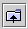

The aim of this section is to get you started with ArgoUML. It takes you through obtaining the code and getting it running.
You have three options for obtaining ArgoUML.
Run ArgoUML directly from the Web Site using Java Web Start. This is the easiest option.
Download the binary code. This is the right option if you intend using ArgoUML regularly and is not that difficult.
Download the source code using CVS and build your own version. Choose this option if you want to look at the internal workings of ArgoUML, or want to join in as a developer.
All three options are freely available through the project web site, argouml.tigris.org.
If you choose to download the binary, you will have a choice of downloading the latest stable version of the code (which will be more reliable, but not have all the latest features), or the current version (which will be less reliable, but have more features). Choose according to your own situation.
There are two steps to this.
Install Java Web Start on your machine. This is available from java.sun.com/products/javawebstart, or via the Java Web Start link on the ArgoUML home page.
Click on the Launch latest stable release link on the ArgoUML home page.
Java Web Start will download ArgoUML, cache it and start it the first time, then on subsequent starts, check if ArgoUML is updated and only download any updated parts and then start it. The ArgoUML home page also provides details on starting ArgoUML from the Java Web Start console.
Since ArgoUML is written in 100% pure Java, it should run on any machine with a Java Engine. Java2, version 1.3 or later is needed. You may have this in place, but if not it can be downloaded free from Sun MicroSystems (www.sun.com). Note that you only need the Java Runtime Environment (JRE), there is no need to download the whole Java Development Kit (JDK).
ArgoUML needs a reasonable amount of computing resource. A PC with 300MHz processor, 64Mb RAM and 10Mb of disk should be adequate. Download the code from Download section of the project website argouml.tigris.org. Choose the version that suits your needs as described in the section above.
ArgoUML comes in .zip or tar.gz flavors. Choose the former if you are a Microsoft Windows user, and the latter if you are running some flavor of Unix. Unpacking is as follows.
On Windows. Unzip the .zip file with WinZip, or on later versions of Windows (ME, XP) copy the files out of the compressed folder and put them into a directory of your choosing.
Use GNU tar to unzip and break out the files to a directory of your choice tar zxvf <file>.tar.gz. If you have an older version of tar, the z option may not be available, so use gunzip < file.tar.gz | tar xvf -.
You should have a directory containing the following files: antlrall.jar, gef.jar, nsuml.jar, README.txt, argouml.jar, log4j.jar, ocl-argo.jar and xerces.jar. To run ArgoUML depends on whether you are a Microsoft Windows or Unix user.
On Windows. Start a MSDOS shell window. Use Start/Run with the default “command”. In the window change to the directory holding your ArgoUML files and type java -jar argouml.jar
Start a shell window and type java -jar argouml.jar
If you get completely stuck and you have no local assistance, try the web site, particularly the FAQ. If this still doesn't solve the problem, try the ArgoUML users' mailing list.
You can subscribe through the mailing lists section of the project web site argouml.tigris.org, or send an empty message to users@argouml.org with the subject line subscribe.
You can then send your problem to users@argouml.org and see how other users are able to help.
The users' mailing list is an excellent introduction to the live activity of the project. If you want to get further involved there are additional mailing lists that cover the development of the product and issues in the current and future releases.
It's unusual to encounter problems if you have made a successful download. Most common issue is not having a new enough Java Runtime Environment (it must be 1.2 or later).
If you can't solve the problem. Try the users' mailing list (see Section 2.5.1.2.1, “Problems Downloading”).
Figure 2.4 shows the main ArgoUML window.

At the top of screen is a menu bar. Under that there are Toolbars. Then the bulk of the window comprises four sub-windows or Panes. Clockwise from top left these are the Explorer, Editing Pane, Details Pane and To-Do Pane. At the top of the Editing Pane is another toolbar called the Edit Pane Toolbar. Finally at the bottom of the window is a status bar.
Figure 2.5 shows the Explorer.
This is the explorer, where we can navigate through our model. This pane list all the classes, interfaces and data types of our model as a tree view.
Figure 2.6 shows the Editing Pane.

This is the Editing Pane, where we can edit our diagram in a graphical way.
Figure 2.7 shows the Details Pane.

This is the Details Pane, that allows us to edit various details of our model.
Figure 2.8 shows the To-Do Pane.

The To-Do Pane displays the items on the models to-do list in a tree which sorts the list in a number of different ways. A drop down selection box at the top of the pane determines the layout of the tree.
The menu bar and toolbars gives access to all the main features of ArgoUML. As is conventional, menu options and toolbar options that are not available are grayed out and menu items that invoke a dialog box are followed by an ellipsis (…).
File menu. This allows you to create a new project, save and open projects, import sources from elsewhere, load and save the model to and from a database, print the model, save the graphics of the model, save the configuration of the model and exit ArgoUML
Edit menu. This allows you to select one or more UML items on a diagram, undo and redo edits, remove items from diagrams or the whole model, empty the trash and change settings.
View menu. This allows you to switch between diagrams, find artifacts in the model, zoom in a diagram, select a particular diagram representation (although at present there is only one), select a particular tab in the details menu, adjust the grid, view buttons on a selection, and switch between UML and Java notation.
Create Diagram menu. This allows you to create any one of the seven UML diagram types (class, use case, state, activity, collaboration, deployment and sequence) supported by ArgoUML.
State and activity diagrams can only be created when a class or actor is selected, even though the relevant menu entries are not grayed out if this has not been done (nothing will happen under this circumstance).
Arrange menu. This allows you to align, distribute, reorder and nudge artifacts on a diagram and set the layout strategy for the diagram.
Generation menu. This allows you to generate Java code for selected classes or all classes.
Critique menu. This allows you to toggle the auto-critique on and off, set the level of importance of design issues and design goals and browse the critics available.
Tools menu. This menu is permanently grayed out unless there is some tool available in your version of ArgoUML.
Help menu. This menu gives access to details of those who authored the system, and where additional help may be found.
File Toolbar. This toolbar contains some of the tools from the File menu.
Edit Toolbar. This toolbar contains some of the tools from the Edit menu.
View Toolbar. This toolbar contains some of the tools from the View menu.
Create Diagram Toolbar. This toolbar contains some of the tools from the Create Diagram menu.
The mouse and mouse buttons (or their equivalent with alternative tracking devices) are used in a wide variety of ways. In this section we look at the common modes of use.
ArgoUML assumes a two button mouse. We will refer to the buttons as “button 1” and “button 2”. Button 1 is the leftmost button on a right-handed mouse, and sometimes referred to as the “select” button. Button 2 is sometimes referred to as the “adjust” button.
Button 1 click. This action is generally used to select an item for subsequent operations. If the item is an artifact in the explorer or the editing pane it will be highlighted.
In the case of the Edit Pane Toolbar, that artifact is selected as the next to be added to the diagram (but only once—see double clicking for adding multiple artifacts). The adding to the diagram is achieved by moving the mouse to the editing area and clicking again.
Button 1 double click. This action is identical to a single click except, when it is used with the edit pane toolbar. Under these circumstances the selected artifact will be added multiple times to the drawing area, once for each further button click, until the tool is again selected or another tool chosen.
Button 2 click. When used over text items in the the explorer or details panes, or graphical artifacts in the editing pane, this will display a context dependent drop-down menu.
If the item has not yet been selected it will also be selected.
Button 1 motion. Where button 1 click has been used to pull down a menu from the menu bar, button 1 motion is used to select items on that menu.
Button 1 motion also has an effect in the editing pane. Over graphical artifacts it will move the artifact to a new position. Graphical artifacts that are selected show handles, and these can be used for re-sizing.
Where the artifact is some form of connector between other items, button 1 motion other than at a handle will cause a new handle to be created, allowing the connector to be articulated at that point. Such new handles can be removed by moving them to the end of the connector.
Button 2 motion. This is used to select items in a context sensitive menu popped up by use of button 2 click.
There are other more specific behaviors that will be encountered under the specific cases where they are used.
In general diagrams are drawn by using the edit pane toolbar to select the artifact desired and clicking in the diagram at the position required as described in Section 2.5.2.6, “The Mouse”. That section also explains the use of the mouse for re-sizing artifacts.
Artifacts that are already in the model, but not on a diagram, may be added to a diagram by selecting the artifact in the explorer, using Add to Diagram from the drop down menu (button 2) over that artifact, and then clicking button 1 at the desired location on the diagram.
As well as UML artifacts, the Edit pane toolbar provides for general drawing artifacts (rectangles, circles, lines, polygons, curves, text) to provide supplementary information on diagrams.
There are several ways to move diagram elements.
Select the elements you want to move. By holding down the control key you can select several.
Now hit your arrow keys. Your elements move a little with every key stroke.
If you also hold down the shift key, they move a bit faster.
Figure 2.9 shows the ArgoUML main window as it appears as right after start-up

The main window's client area, below the menu and toolbar, is subdivided into four panes. Starting at the leftmost top pane, and working around the clock, you can see the Explorer, showing a tree view of your UML model, the Editing Pane with its toolbar, two scroll bars and gray drawing area, the Details Pane with the ToDoItem tab selected, and the To-Do Pane with a tree view of the to do items, ranked in various ways selected via the drop down list at the top of the pane.
Each time ArgoUML is started up without a project file as an argument, a new blank project is created. This project contains a model called untitledModel. This model contains a blank Class Diagram, called class diagram 1, and a blank Use Case Diagram called use case diagram 1.
The model and both empty diagrams can be seen in the explorer, which is the main tool for you to navigate through your model.
Let's assume for a moment that this is the point where you want to start modeling a new purchasing system. You want to give the name “purchasingmodel” to your model, and you want to store it in a file called FirstProject.
First, let's save the model in it's current (empty and unnamed) state. On the menu bar, click on File, then on Save Project As… as shown in Figure 2.10.

Please notice that the File menu contains the usual options for creating a new project, for opening an existing project, for saving a project under a new name, for printing the currently displayed diagram, for saving the currently displayed diagram as a file, and for program Exit.
Some of these menu commands can be invoked by pressing key combinations, as indicated on the drop-down menu. For instance, holding down the “Ctrl” key, and pressing “N”, will create a new project.
In the current version, ArgoUML can only contain one active project at a time. In addition, a project can only contain one UML model. Since an UML model can contain an unlimited number of elements and diagrams, this should not present any serious limitations, even for modeling quite large and complex systems.
But let's go back to saving our project. After clicking on the Save Project As… menu command, we get the file chooser dialog to enter the file name we wish to use as shown in Figure 2.11.

This is a standard Java FileChooser. Let's go over it in some detail.
The main, outstanding feature, is the scrollable folders list in the center of the dialog. By using the scroll bar on the right, you can move up and down in the list of folders contained inside the currently selected folder. If it is scrollable or not depends on the amount of files and folders shown and also how they are shown. If everything fits the window is not scrollable as seen in the picture.
Double-clicking on one of the displayed folders navigates you into that folder, allowing you to quickly navigate down into the folders hierarchy on your hard disk.
Notice that only folder names, and no file names are displayed in the scrollable area. Indeed, the dialog is currently set up in order to show only ArgoUML project files with an extension of .zargo, as can be seen on the lower drop-down control labeled Files of Type:.
Also notice that the currently selected folder's name is displayed in the upper drop-down control labeled Look in:. A single click on a folder inside the scrollable area does select that folder on screen but does not select the folder for saving.
At the top of the dialog, above the scrollable folder chooser area, there are a few more folder navigation tools.
 The Folder drop-down control. Clicking on the
down-arrow displays a tree view of the folder hierarchy,
allowing you to navigate quickly up the hierarchy, and at
the same time to quickly determine where in the hierarchy
we are currently positioned.
The Folder drop-down control. Clicking on the
down-arrow displays a tree view of the folder hierarchy,
allowing you to navigate quickly up the hierarchy, and at
the same time to quickly determine where in the hierarchy
we are currently positioned.
 The Folder-Up icon. Clicking on this icon will bring us to the parent folder of the current folder.
 The Home Folder icon. Clicking on this icon will bring
us to our home directory.
The Home Folder icon. Clicking on this icon will bring
us to our home directory.
 The New Folder icon. Clicking on this icon will create
a new folder called "New Folder" under the current folder.
After the folder is created selecting it an clicking in the name
allows us to select the name of our choice.
The New Folder icon. Clicking on this icon will create
a new folder called "New Folder" under the current folder.
After the folder is created selecting it an clicking in the name
allows us to select the name of our choice.
 The Folders Presentation Icon.
The Folders Presentation Icon.
OK, now we navigate to the directory where we want to save our ArgoUML project, fill in the File name: with an appropriate name, such as “FirstProject” and click on the Save button.
You have now an active project called FirstProject, connected to the file FirstProject.zargo.
ArgoUML saves the diagram information in a PGML file (with extension .pgml, the model information in an XMI file (with extension .xmi and information about the project in a file with extension .argo. See Section 2.5.3.2.2, “Precision Graphics Markup Language (PGML)” and Section 2.5.3.3, “XMI” for more about PGML and XMI respectively.
All of these are then zipped to a file with extension .zargo. You can easily extract the .xmi file from the .zargo file using any old generic ZIP application. Give it a try and look into the magic of Argo.
![[Warning]](images/warning.png) | Warning |
|---|---|
Be aware that double clicking will launch a ZIP utility, if one is installed, and NOT Argo. | |
GEF is the software package that is the foundation of the diagrams that appear in the Editing Pane. GEF was an integral part of ArgoUML but has been separated. Like ArgoUML it is an open source project available via Tigris.
PGML is the saving format for diagram information used in ArgoUML. Although this is outdated a little, it shows why we chose PGML in the first place. In the future, PGML will be replaced by an extended XMI format which will include graphical representation.
In April 1998 Adobe Systems proposed a new Standard for Vector Graphics to the World Wide Web Consortium (W3C), which should facilitate the creation and usage of image material in the World Wide Web. It will be replaced by SVG. We will support SVG by generating it from the XMI in the future.
PGML is a predecessor of SVG (see Section 2.5.3.2.5, “Scalable Vector Graphics (SVG)”. It was dropped by the W3C Consortium.
Currently there are no other tools that we know of working on PGML.
Select a diagram, then go to File→Export Diagrams. You can generate GIF, PostScript, Encapsulated PostScript or SVG format.
A super cool vector graphics format (like MM Flash) that is totally open and is gaining enormous ground in the graphics world. Find out more at www.w3c.org.
As well visit adobe.com for the plugin for Netscape Navigator and Internet Explorer.
Select .svg as the file type.
Type the name of the file as you like with the .svg tag at the end. Example myumldiagram.svg
Et viola! SVG! Give it a try and zoom around a little… They are not pretty though, so if you know anything about rendering beautiful SVG let us know!
Oh, and by the way, you'll need a browser that can read SVG. See adobe.com for the plugin for Netscape Navigator and Internet Explorer
There are a few browsers that read SVG natively: Amaya, X-Smiles, and a rudimentary version of Mozilla.
![[Note]](images/note.png) | Note |
|---|---|
You will not have scroll bars for your SVG unless it is embedded into an HTML! Good luck and let us know what you find! | |
There is now a tool available which supports various dialects of XMI and their interconversion. This should make portability of different models in to ArgoUML considerably easier. Any work on using this with ArgoUML would be much appreciated.
There is also a tool that converts XMI to HTML. For more information, see http://www.objectsbydesign.com/projects/xmi_to_html_2.html.
It is probably not possible to take a model generated by Rational Rose in XMI format and put it into ArgoUML directly.
The conversion tool identified above will probably solve the problem. If you can document how this is done, you'd make a lot of friends in a hurry!
Gentleware is a commercial development based on ArgoUML. It diverged a little while ago and the XMI representations are no longer full compatible.
Eugenio Alvarez suggests the following procedure to convert a Gentleware project for use with ArgoUML. It works if there are no sequence diagrams in the project.
Make sure to backup your project first.
Unpackage the Gentleware project Project.zargo. For example unzip Project.zargo or jar xvf Project.zargo.
Then try reading and then saving the project with UMLTool (Contact Eugenio Alvarez to get this tool).
Repackage the project. For example zip NewProject.zargo *.xmi *.pgml *.argo or jar cvf NewProject.zargo *.
Try reading the project with ArgoUML.
This depends on the version of NSUML (the UML engine underlying ArgoUML) you are using. Look in the start-up messages on the console for the entry for Novosoft UML Library for the version number. Using version 0.4.19 is OK, and the XMI files should be interchangeable.
Because of the variety of XMI formats being generated you will encounter problems using XMI files generated from other applications. ArgoUML's native storage format is another implementation of XMI (Curt Arnold believes that it has been hacked so it can also read the Unisys variant). He recommends that if you are comfortable with XSLT, you can typically transform one variant of UML and XMI to another, plus MetaIntegrations www.metaintegrations.net makes a version of their Bridge product available to transform between XMI flavors.
It is possible to compile your generated code with ArgoUML, you still need to implement method bodies, though, to get usable results.
At the moment you cannot write code for methods (operations) within ArgoUML. The source pane is editable, but the changes are ignored. ArgoUML is a pure design tool for now, no IDE functionality but the desire is there. You might consider using Forte and ArgoUML together—it's a good work around!
You can help us out there if you'd like!
Where do we stand now? A new project has been created, and is connected to the file FirstProject.argo. Figure 2.12 shows how your ArgoUML window should look at this stage.

The project contains a top-level package, called untitledModel, which contains a class diagram and a use case diagram.
If we look carefully at the screen, we can see that the "Medium"
folder in the To Do pane (the lower left pane) must contain some
items, since its activation icon
 is
displayed.
is
displayed.
Clicking on this icon will open the "Medium" folder. An open
folder is indicated by the
 icon.
icon.
But what is this “To-Do” Pane anyway. You haven't recorded anything yet that has to be done, so where do these to do items originate.
The answer is simple, and is at the same time one of the strong points of ArgoUML. While you are working on your UML model, your work is monitored continuously and invisibly by a piece of code called a design critic. This is like a personal mentor that watches over your shoulder and notifies you each time he sees something questionable in your design.
Critics are quite unobtrusive. They give you a friendly warning,
but they do not force you into design principles that you don't want
or like to follow. Let us take a look at what the critics are
telling us. Click on the
icon next to the Medium folder, and click on the
Revise Package Name UntitledModel
item.
Figure 2.13 shows how your screen should now look.

{kind=link}
Notice that your selection is highlighted in red in the To-Do Pane, and that a full explanation appears now in the Details Pane (the lower right pane). You may have to re-size your Details Pane or to scroll down in order to see the full message as displayed in our example.
What ArgoUML is trying to tell you is that usually, package names are written in lower cases. The default top level package created by ArgoUML is called untitledModel and therefore violates a sound design principle. (Actually, this could be considered as a bug within ArgoUML, but it comes in handy to demonstrate the working of critics).
At this point, you can choose to change the package name manually, to impose silence on the design critic for some time or permanently, or to request a more comprehensive explanation by Email from an expert.
We will do nothing of this (we'll come back to it when we talk about the design critics in more detail) but we'll use another handy feature of ArgoUML—an auto-correct feature.
In order to do that, just click on the Next button on the Details Pane. This will cause a renaming wizard to be displayed inside the properties panel, proposing to use the name untitledmodel (all in lower case).
Replace the name untitledmodel with purchasingmodel, and click on the Finish button. Figure 2.14 shows how the ArgoUML window will now look.
Watch now how the design critic note in the To Do panel disappears, leaving only the Add Elements to Package purchasingmodel note in the To-Do list.
If this doesn't happen at once, wait for a few seconds. ArgoUML makes heavy use of several threads of execution that execute in parallel. This can cause delays of a few seconds before the information gets updated on the screen.
The package name change should also be reflected in the explorer, in the top left corner of your ArgoUML window.
We are now ready to create our first UML diagram, a Use Case diagram, but first let's save what we've done so far.
Click on the File menu item, and select Save Project. You can now safely exit ArgoUML without losing your work so far, or go on creating your first diagram.